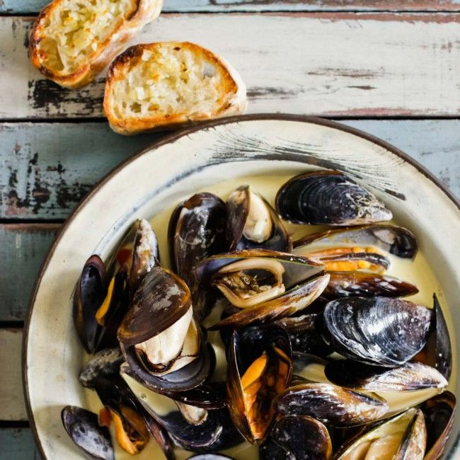

Virtos dešros
 Informuojame, kad šioje svetainėje yra naudojami slapukai (angl. cookies). Toliau naršydami svetainėje arba paspausdami mygtuką Sutinku Jūs sutinkate su slapukų naudojimu. Savo duotą sutikimą bet kada galėsite atšaukti pakeisdami savo interneto naršyklės nustatymus ir ištrindami įrašytus slapukus. Daugiau informacijos apie slapukus galite rasti čia . Sutinku Keisti apskritį Parsisiųskite Lietuvių English Русский Registruotis Prisijungti Prisijungti RegistruotisSveiki, ačiū, kad vėl pas mus užsukote!
Caps Lock yra įjungtas
(8 5) 230 9309 Prekės Mano prekės Akcijos Eko ir ūkis Naujienos Receptai Daržovės ir vaisiai Pieno gaminiai ir kiaušiniai Duonos gaminiai ir konditerija Mėsa, žuvys ir kulinarija Bakalėja Šaldytas maistas Gėrimai Kūdikių ir vaikų prekės Kosmetika ir higiena Švaros ir gyvūnų prekės Namai ir laisvalaikis Pagrindinis puslapis Mėsa, žuvys ir kulinarija Mėsos ir paukštienos gaminiai Virtos dešros (8 5) 230 9309 Kasdien nuo 8 iki 21 val. El. p.: pagalba@barbora.lt Mėsos ir paukštienos gaminiai 477 Virtos dešros 55 1 2 Filtruoti Rūšiuoti pagal: Abėcėlę (A-Ž) Abėcėlę (Ž-A) Kainą (didėj.) Kainą (mažėj.) Be Akcijos Akcijines kainas Kaina už mato vnt. (didėj.) Kaina už mato vnt. (mažėj.) Virta UTENOS DAKTARIŠKA dešra, a. r., 250 g €1,09 €4,36/kg Virta UTENOS DAKTARIŠKA dešra, a. r., 250 g KARTU REKOMENDUOJAME Virta GIMINIŲ DAKTARIŠKA dešra, a. r., 250 g €1,52 €6,08/kg Virta GIMINIŲ DAKTARIŠKA dešra, a. r., 250 g KARTU REKOMENDUOJAME Virta VAIKŲ dešra, a. r., 250 g €1,99 €7,96/kg Virta VAIKŲ dešra, a. r., 250 g KARTU REKOMENDUOJAME Virta EKSTRA DAKTARIŠKA dešra, a. r., 250 g €1,99 €7,96/kg Virta EKSTRA DAKTARIŠKA dešra, a. r., 250 g KARTU REKOMENDUOJAME Virta DAKTARIŠKA KLASIKINĖ dešra, a. r., 600 g €3,79 €2,65 €4,42/kg Virta DAKTARIŠKA KLASIKINĖ dešra, a. r., 600 g KARTU REKOMENDUOJAME Virta dešra LIETUVOS STANDARTAS, a.r., 250 g €1,89 €7,56/kg Virta dešra LIETUVOS STANDARTAS, a.r., 250 g KARTU REKOMENDUOJAME Virta PANERIO dešra, a. r., 250 g €1,19 €4,76/kg Virta PANERIO dešra, a. r., 250 g KARTU REKOMENDUOJAME Virta dešra MĖSINGA griežinėliais, a.r., 190 g €1,89 €9,95/kg Virta dešra MĖSINGA griežinėliais, a.r., 190 g KARTU REKOMENDUOJAME Virta kumpinė dešra CHOP&EAT, a. r., 200 g €1,05 €5,25/kg Virta kumpinė dešra CHOP&EAT, a. r., 200 g KARTU REKOMENDUOJAME Virta SAMSONIUKŲ dešra su veršiena, a. r., 300 g €1,99 €6,63/kg Virta SAMSONIUKŲ dešra su veršiena, a. r., 300 g KARTU REKOMENDUOJAME Virta SAMSONIUKŲ dešra su jautiena, a. r., 300 g €1,89 €6,30/kg Virta SAMSONIUKŲ dešra su jautiena, a. r., 300 g KARTU REKOMENDUOJAME Virta kiaulienos dešra CHOP&EAT, a. r., 200 g €0,79 €3,95/kg Virta kiaulienos dešra CHOP&EAT, a. r., 200 g KARTU REKOMENDUOJAME Virta MAŽYLIŲ vištienos filė dešra su joduota druska, a. r., 300 g €1,89 €6,30/kg Virta MAŽYLIŲ vištienos filė dešra su joduota druska, a. r., 300 g KARTU REKOMENDUOJAME Virta daktariška dešra, a. r., 600 g €5,49 €9,15/kg Virta daktariška dešra, a. r., 600 g KARTU REKOMENDUOJAME Virta dešra TOSTY griežinėliais, a.r., 190 g €1,69 €8,89/kg Virta dešra TOSTY griežinėliais, a.r., 190 g KARTU REKOMENDUOJAME Virta daktariška dešra ŽALGIRIS, a.r., 400 g €2,99 €7,48/kg Virta daktariška dešra ŽALGIRIS, a.r., 400 g KARTU REKOMENDUOJAME Virta BAJORŲ dešra, a.r., 400 g €3,15 €7,88/kg Virta BAJORŲ dešra, a.r., 400 g KARTU REKOMENDUOJAME Virta GIMINIŲ daktariška dešra, a. r., 1 kg €6,29 €6,29/kg Virta GIMINIŲ daktariška dešra, a. r., 1 kg KARTU REKOMENDUOJAME Virta SMETONIŠKA DAKTARIŠKA dešra, a.r., 330 g €1,86 €5,64/kg Virta SMETONIŠKA DAKTARIŠKA dešra, a.r., 330 g KARTU REKOMENDUOJAME Virta GASPADORIAUS daktariška dešra, a.r., 600 g €2,29 €3,82/kg Virta GASPADORIAUS daktariška dešra, a.r., 600 g KARTU REKOMENDUOJAME Virta DAKTARIŠKA dešra VIŠTIENA KITAIP, a. r., 560 g €2,29 €4,09/kg Virta DAKTARIŠKA dešra VIŠTIENA KITAIP, a. r., 560 g KARTU REKOMENDUOJAME Virta karštų sumuštinių dešra VIŠTIENA KITAIP, a. r., 560 g €2,79 €4,23/kg Virta karštų sumuštinių dešra VIŠTIENA KITAIP, a. r., 560 g KARTU REKOMENDUOJAME Virta MAŽYLIŲ dešra, a. r., 300 g €1,89 €6,30/kg Virta MAŽYLIŲ dešra, a. r., 300 g KARTU REKOMENDUOJAME Virta KARALIŠKA kalakutienos dešra, a.r., 300 g €2,49 €8,30/kg Virta KARALIŠKA kalakutienos dešra, a.r., 300 g KARTU REKOMENDUOJAME Virta SAMSONO DAKTARIŠKA dešra, a. r., 330 g €2,49 €7,55/kg Virta SAMSONO DAKTARIŠKA dešra, a. r., 330 g KARTU REKOMENDUOJAME Virta MĖSINGA dešra, a. r., 340 g €2,28 €6,71/kg Virta MĖSINGA dešra, a. r., 340 g KARTU REKOMENDUOJAME Virta DAKTARIŠKA premium dešra, a. r., 600 g €3,69 €2,58 €4,30/kg Virta DAKTARIŠKA premium dešra, a. r., 600 g KARTU REKOMENDUOJAME Virta dešra JOKIŲ PRIDĖTINIŲ E, a. r., 250 g €2,03 €8,12/kg Virta dešra JOKIŲ PRIDĖTINIŲ E, a. r., 250 g KARTU REKOMENDUOJAME Virta ŽEMAITIŠKA dešra, a. r., 1 kg €6,99 €6,99/kg Virta ŽEMAITIŠKA dešra, a. r., 1 kg KARTU REKOMENDUOJAME Virta SAMSONO PANERIO dešra, a. r., 330 g €2,19 €6,64/kg Virta SAMSONO PANERIO dešra, a. r., 330 g KARTU REKOMENDUOJAME Virta GASPADORIAUS DAKTARIŠKA dešra, a. r., 430 g €0,99 €2,30/kg Virta GASPADORIAUS DAKTARIŠKA dešra, a. r., 430 g KARTU REKOMENDUOJAME Virta GIMINIŲ daktariška dešra, a.r., 600 g €3,89 €6,48/kg Virta GIMINIŲ daktariška dešra, a.r., 600 g KARTU REKOMENDUOJAME Virta MĖSINGA dešra, a.r., 1 kg €6,99 €6,99/kg Virta MĖSINGA dešra, a.r., 1 kg KARTU REKOMENDUOJAME Virta PANERIO dešra, a. r., 300 g €1,06 €3,53/kg Virta PANERIO dešra, a. r., 300 g KARTU REKOMENDUOJAME Virta DAKTARIŠKA dešra, a. r., 320 g €1,82 €5,69/kg Virta DAKTARIŠKA dešra, a. r., 320 g KARTU REKOMENDUOJAME Virta SAMSONO DAKTARIŠKA dešra, a.r., 600 g €4,39 €7,32/kg Virta SAMSONO DAKTARIŠKA dešra, a.r., 600 g KARTU REKOMENDUOJAME Virta BAJORŲ dešra, a. r., 1 kg €6,59 €6,59/kg Virta BAJORŲ dešra, a. r., 1 kg KARTU REKOMENDUOJAME Virta kumpinė SAMSONO dešra, a. r., 350 g €2,89 €8,26/kg Virta kumpinė SAMSONO dešra, a. r., 350 g KARTU REKOMENDUOJAME Virta GASPADORIAUS daktariška dešra, a.r., 300 g €0,65 €2,17/kg Virta GASPADORIAUS daktariška dešra, a.r., 300 g KARTU REKOMENDUOJAME Virta EKSTRA dešra su lašinukais, a. r., 320 g €1,59 €4,97/kg Virta EKSTRA dešra su lašinukais, a. r., 320 g KARTU REKOMENDUOJAME Virta SAMSONO KUMPINĖ dešra, a.r., 200 g €1,99 €9,95/kg Virta SAMSONO KUMPINĖ dešra, a.r., 200 g KARTU REKOMENDUOJAME Virta DAKTARIŠKA dešra, a. r., 300 g €1,18 €3,93/kg Virta DAKTARIŠKA dešra, a. r., 300 g KARTU REKOMENDUOJAME Virta daktariška PREMIUM dešra, a.r., 600 g €3,29 €5,48/kg Virta daktariška PREMIUM dešra, a.r., 600 g KARTU REKOMENDUOJAME Virta VAIKŲ dešra, a. r., 150 g €1,18 €7,87/kg Virta VAIKŲ dešra, a. r., 150 g KARTU REKOMENDUOJAME Virta DAKTARIŠKA EKSTRA dešra, a. r., 600 g €3,89 €1,95 €3,24/kg 2 už €3,89 Virta DAKTARIŠKA EKSTRA dešra, a. r., 600 g KARTU REKOMENDUOJAME Virta ŽEMAITIŠKA dešra su lašinukais, a. r., 1 kg €6,99 €6,99/kg Virta ŽEMAITIŠKA dešra su lašinukais, a. r., 1 kg KARTU REKOMENDUOJAME Virta DZŪKŲ dešra, a. r., 1 kg €6,99 €6,99/kg Virta DZŪKŲ dešra, a. r., 1 kg KARTU REKOMENDUOJAME Virta SAMSONIUKŲ dešra, a. r., 300 g €1,99 €6,63/kg Virta SAMSONIUKŲ dešra, a. r., 300 g KARTU REKOMENDUOJAME Mažai parūkyta virta GURMANŲ dešra, a. r., 550 g €4,49 €3,14 €5,71/kg Mažai parūkyta virta GURMANŲ dešra, a. r., 550 g KARTU REKOMENDUOJAME Virta daktariška dešra su jautiena, a. r., 550 g €3,99 €2,79 €5,07/kg Virta daktariška dešra su jautiena, a. r., 550 g KARTU REKOMENDUOJAME Virta EKSTRA dešra su lašinukais, a. r., 1 kg €5,99 €5,99/kg Virta EKSTRA dešra su lašinukais, a. r., 1 kg KARTU REKOMENDUOJAME Virta kalakutienos kumpinė dešra, a.r., 90 g €1,99 €22,11/kg Virta kalakutienos kumpinė dešra, a.r., 90 g KARTU REKOMENDUOJAME 1 2 Prekės Mano prekės Akcijos Eko ir ūkis Naujienos Receptai